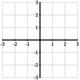

Section 6.4 Finding orthogonal bases
The last section demonstrated the value of working with orthogonal, and especially orthonormal, sets. If we have an orthogonal basis \(\wvec_1,\wvec_2,\ldots,\wvec_n\) for a subspace \(W\text{,}\) the Projection Formula 6.3.15 tells us that the orthogonal projection of a vector \(\bvec\) onto \(W\) is
An orthonormal basis \(\uvec_1,\uvec_2,\ldots,\uvec_n\) is even more convenient: after forming the matrix \(Q=\begin{bmatrix} \uvec_1 \amp \uvec_2 \amp \ldots \amp \uvec_n \end{bmatrix}\text{,}\) we have \(\bhat = QQ^T\bvec\text{.}\)
In the examples we've seen so far, however, orthogonal bases were given to us. What we need now is a way to form orthogonal bases. In this section, we'll explore an algorithm that begins with a basis for a subspace and creates an orthogonal basis. Once we have an orthogonal basis, we can scale each of the vectors appropriately to produce an orthonormal basis.
Preview Activity 6.4.1.
Suppose we have a basis for \(\real^2\) consisting of the vectors
as shown in Figure 6.4.1. Notice that this basis is not orthogonal.

Find the vector \(\vhat_2\) that is the orthogonal projection of \(\vvec_2\) onto the line defined by \(\vvec_1\text{.}\)
Explain why \(\vvec_2 - \vhat_2\) is orthogonal to \(\vvec_1\text{.}\)
-
Define the new vectors \(\wvec_1=\vvec_1\) and \(\wvec_2=\vvec_2-\vhat_2\) and sketch them in Figure 6.4.2. Explain why \(\wvec_1\) and \(\wvec_2\) define an orthogonal basis for \(\real^2\text{.}\)
Figure 6.4.2. Sketch the new basis \(\wvec_1\) and \(\wvec_2\text{.}\) Write the vector \(\bvec=\twovec8{-10}\) as a linear combination of \(\wvec_1\) and \(\wvec_2\text{.}\)
Scale the vectors \(\wvec_1\) and \(\wvec_2\) to produce an orthonormal basis \(\uvec_1\) and \(\uvec_2\) for \(\real^2\text{.}\)
Subsection 6.4.1 Gram-Schmidt orthogonalization
The preview activity illustrates the main idea behind an algorithm, known as Gram-Schmidt orthogonalization, that begins with a basis for some subspace of \(\real^m\) and produces an orthogonal or orthonormal basis. The algorithm relies on our construction of the orthogonal projection. Remember that we formed the orthogonal projection \(\bhat\) of \(\bvec\) onto a subspace \(W\) by requiring that \(\bvec-\bhat\) is orthogonal to \(W\) as shown in Figure 6.4.3.

This observation guides our construction of an orthogonal basis for it allows us to create a vector that is orthogonal to a given subspace. Let's see how the Gram-Schmidt algorithm works.
Activity 6.4.2.
Suppose that \(W\) is a three-dimensional subspace of \(\real^4\) with basis:
We can see that this basis is not orthogonal by noting that \(\vvec_1\cdot\vvec_2 = 8\text{.}\) Our goal is to create an orthogonal basis \(\wvec_1\text{,}\) \(\wvec_2\text{,}\) and \(\wvec_3\) for \(W\text{.}\)
To begin, we declare that \(\wvec_1=\vvec_1\text{,}\) and we call \(W_1\) the line defined by \(\wvec_1\text{.}\)
Find the vector \(\vhat_2\) that is the orthogonal projection of \(\vvec_2\) onto \(W_1\text{,}\) the line defined by \(\wvec_1\text{.}\)
Form the vector \(\wvec_2 = \vvec_2-\vhat_2\) and verify that it is orthogonal to \(\wvec_1\text{.}\)
Explain why \(\laspan{\wvec_1,\wvec_2} = \laspan{\vvec_1,\vvec_2}\) by showing that any linear combination of \(\vvec_1\) and \(\vvec_2\) can be written as a linear combination of \(\wvec_1\) and \(\wvec_2\) and vice versa.
The vectors \(\wvec_1\) and \(\wvec_2\) are an orthogonal basis for a two-dimensional subspace \(W_2\) of \(\real^4\text{.}\) Find the vector \(\vhat_3\) that is the orthogonal projection of \(\vvec_3\) onto \(W_2\text{.}\)
Verify that \(\wvec_3 = \vvec_3-\vhat_3\) is orthogonal to both \(\wvec_1\) and \(\wvec_2\text{.}\)
Explain why \(\wvec_1\text{,}\) \(\wvec_2\text{,}\) and \(\wvec_3\) form an orthogonal basis for \(W\text{.}\)
Now find an orthonormal basis for \(W\text{.}\)
As this activity illustrates, Gram-Schmidt orthogonalization begins with a basis \(\vvec_1\vvec_2,\ldots,\vvec_n\) for a subspace \(W\) of \(\real^m\) and creates an orthogonal basis for \(W\text{.}\) Let's work through a second example.
Example 6.4.4.
Let's start with the basis
which is a basis for \(\real^3\text{.}\)
To get started, we'll simply set \(\wvec_1=\vvec_1=\threevec{2}{-1}2\text{.}\) We construct \(\wvec_2\) from \(\vvec_2\) by subtracting its orthogonal projection onto \(W_1\text{,}\) the line defined by \(\wvec_1\text{.}\) This gives
Notice that we found \(\vvec_2 = -\wvec_1 + \wvec_2\text{.}\) Therefore, we can rewrite any linear combination of \(\vvec_1\) and \(\vvec_2\) as
a linear combination of \(\wvec_1\) and \(\wvec_2\text{.}\) This tells us that
In other words, \(\wvec_1\) and \(\wvec_2\) is a orthogonal basis for \(W_2\text{,}\) the 2-dimensional subspace that is the span of \(\vvec_1\) and \(\vvec_2\text{.}\)
Finally, we form \(\wvec_3\) from \(\vvec_3\) by subtracting its orthogonal projection onto \(W_2\text{:}\)
We can now check that
is an orthogonal set. Furthermore, we have, as before, \(\laspan{\wvec_1,\wvec_2,\wvec_3} = \laspan{\vvec_1,\vvec_2,\vvec_3}\text{,}\) which says that we have found a new orthogonal basis for \(\real^3\text{.}\)
To create an orthonormal basis, we form unit vectors parallel to each of the vectors in the orthogonal basis:
More generally, if we have a basis \(\vvec_1,\vvec_2,\ldots,\vvec_n\) for a subspace \(W\) of \(\real^m\text{,}\) the Gram-Schmidt algorithm creates an orthogonal basis for \(W\) in the following way:
From here, we may form an orthonormal basis by constructing a unit vector parallel to each vector in the orthogonal basis: \(\uvec_j = 1/\len{\wvec_j}~\wvec_j\text{.}\)
Activity 6.4.3.
Sage can automate these computations for us. Before we begin, however, it will be helpful to understand how we can combine things using a list in Python. For instance, if the vectors v1, v2, and v3 form a basis for a subspace, we can bundle them together using square brackets: [v1, v2, v3]. Furthermore, we could assign this to a variable, such as basis = [v1, v2, v3].
Evaluating the following cell will load in some special commands.
There is a command to apply the projection formula:
projection(b, basis)returns the orthogonal projection ofbonto the subspace spanned bybasis, which is a list of vectors.The command
unit(w)returns a unit vector parallel tow.Given a collection of vectors, say,
v1andv2, we can form the matrix whose columns arev1andv2usingmatrix([v1, v2]).T. When given alistof vectors, Sage constructs a matrix whose rows are the given vectors. For this reason, we need to apply the transpose.
Let's now consider \(W\text{,}\) the subspace of \(\real^5\) having basis
-
Apply the Gram-Schmidt algorithm to find an orthogonal basis \(\wvec_1\text{,}\) \(\wvec_2\text{,}\) and \(\wvec_3\) for \(W\text{.}\)
Find \(\bhat\text{,}\) the orthogonal projection of \(\bvec = \fivevec{-5}{11}0{-1}5\) onto \(W\text{.}\)
-
Explain why we know that \(\bhat\) is a linear combination of the original vectors \(\vvec_1\text{,}\) \(\vvec_2\text{,}\) and \(\vvec_3\) and then find weights so that
\begin{equation*} \bhat = c_1\vvec_1 + c_2\vvec_2 + c_3\vvec_3. \end{equation*} -
Find an orthonormal basis \(\uvec_1\text{,}\) \(\uvec_2\text{,}\) for \(\uvec_3\) for \(W\) and form the matrix \(Q\) whose columns are these vectors.
Find the product \(Q^TQ\) and explain the result.
Find the matrix \(P\) that projects vectors orthogonally onto \(W\) and verify that \(P\bvec\) gives \(\bhat\text{,}\) the orthogonal projection that you found earlier.
Subsection 6.4.2 \(QR\) factorizations
Now that we've seen how the Gram-Schmidt algorithm forms an orthonormal basis for a given subspace, we will explore how the algorithm leads to an important matrix factorization known as the \(QR\) factorization.
Activity 6.4.4.
Suppose that \(A\) is the \(4\times3\) matrix whose columns are
These vectors form a basis for \(W\text{,}\) the subspace of \(\real^4\) that we encountered in Activity 6.4.2. Since these vectors are the columns of \(A\text{,}\) we have \(\col(A) = W\text{.}\)
-
When we implemented Gram-Schmidt, we first found an orthogonal basis \(\wvec_1\text{,}\) \(\wvec_2\text{,}\) and \(\wvec_3\) using
\begin{equation*} \begin{aligned} \wvec_1 \amp = \vvec_1 \\ \wvec_2 \amp = \vvec_2 - \frac{\vvec_2\cdot\wvec_1}{\wvec_1\cdot\wvec_1}\wvec_1 \\ \wvec_3 \amp = \vvec_3 - \frac{\vvec_3\cdot\wvec_1}{\wvec_1\cdot\wvec_1}\wvec_1 - \frac{\vvec_3\cdot\wvec_2}{\wvec_2\cdot\wvec_2}\wvec_2\text{.} \\ \end{aligned} \end{equation*}Use these expressions to write \(\vvec_1\text{,}\) \(\vvec_1\text{,}\) and \(\vvec_3\) as linear combinations of \(\wvec_1\text{,}\) \(\wvec_2\text{,}\) and \(\wvec_3\text{.}\)
-
We next normalized the orthogonal basis \(\wvec_1\text{,}\) \(\wvec_2\text{,}\) and \(\wvec_3\) to obtain an orthonormal basis \(\uvec_1\text{,}\) \(\uvec_2\text{,}\) and \(\uvec_3\text{.}\)
Write the vectors \(\wvec_i\) as scalar multiples of \(\uvec_i\text{.}\) Then use these expressions to write \(\vvec_1\text{,}\) \(\vvec_1\text{,}\) and \(\vvec_3\) as linear combinations of \(\uvec_1\text{,}\) \(\uvec_2\text{,}\) and \(\uvec_3\text{.}\)
Suppose that \(Q = \left[ \begin{array}{ccc} \uvec_1 \amp \uvec_2 \amp \uvec_3 \end{array} \right]\text{.}\) Use the result of the previous part to find a vector \(\rvec_1\) so that \(Q\rvec_1 = \vvec_1\text{.}\)
Then find vectors \(\rvec_2\) and \(\rvec_3\) such that \(Q\rvec_2 = \vvec_2\) and \(Q\rvec_3 = \vvec_3\text{.}\)
Construct the matrix \(R = \left[ \begin{array}{ccc} \rvec_1 \amp \rvec_2 \amp \rvec_3 \end{array} \right]\text{.}\) Remembering that \(A = \left[ \begin{array}{ccc} \vvec_1 \amp \vvec_2 \amp \vvec_3 \end{array} \right]\text{,}\) explain why \(A = QR\text{.}\)
What is special about the shape of \(R\text{?}\)
Suppose that \(A\) is a \(10\times 6\) matrix whose columns are linearly independent. This means that the columns of \(A\) form a basis for \(W=\col(A)\text{,}\) a 6-dimensional subspace of \(\real^{10}\text{.}\) Suppose that we apply Gram-Schmidt orthogonalization to create an orthonormal basis whose vectors form the columns of \(Q\) and that we write \(A=QR\text{.}\) What are the shape of \(Q\) and what the shape of \(R\text{?}\)
When the columns of a matrix \(A\) are linearly independent, they form a basis for \(\col(A)\) so that we can perform the Gram-Schmidt algorithm. The previous activity shows how this leads to a factorization of \(A\) as the product of a matrix \(Q\) whose columns are an orthonormal basis for \(\col(A)\) and an upper triangular matrix \(R\text{.}\)
Proposition 6.4.5. \(QR\) factorization.
If \(A\) is an \(m\times n\) matrix whose columns are linearly independent, we may write \(A=QR\) where \(Q\) is an \(m\times n\) matrix whose columns form an orthonormal basis for \(\col(A)\) and \(R\) is an \(n\times n\) upper triangular matrix.Example 6.4.6.
We'll consider the matrix \(A=\begin{bmatrix} 2 \amp -3 \amp -2 \\ -1 \amp 3 \amp 7 \\ 2 \amp 0 \amp 1 \\ \end{bmatrix}\) whose columns, which we'll denote \(\vvec_1\text{,}\) \(\vvec_2\text{,}\) and \(\vvec_3\text{,}\) are the basis of \(\real^3\) that we considered in Example 6.4.4. There we found an orthogonal basis \(\wvec_1\text{,}\) \(\wvec_2\text{,}\) and \(\wvec_3\) that satisfied
In terms of the resulting orthonormal basis \(\uvec_1\text{,}\) \(\uvec_2\text{,}\) and \(\uvec_3\text{,}\) we had
so that
Therefore, if \(Q=\begin{bmatrix} \uvec_1 \amp \uvec_2 \amp \uvec_3 \end{bmatrix}\text{,}\) we have the \(QR\) factorization
The value of the \(QR\) factorization will become clear in the next section where we use it to solve least squares problems.
Activity 6.4.5.
As before, we would like to use Sage to automate the process of finding and using the \(QR\) factorization of a matrix \(A\text{.}\) Evaluating the following cell provides a command QR(A) that returns the factorization, which may be stored using, for example, Q, R = QR(A).
Suppose that \(A\) is the following matrix whose columns are linearly independent.
If \(A=QR\text{,}\) what is the shape of \(Q\) and \(R\text{?}\) What is special about the form of \(R\text{?}\)
Find the \(QR\) factorization using
Q, R = QR(A)and verify that \(R\) has the predicted shape and that \(A=QR\text{.}\)Find the matrix \(P\) that orthogonally projects vectors onto \(\col(A)\text{.}\)
Find \(\bhat\text{,}\) the orthogonal projection of \(\bvec=\fourvec4{-17}{-14}{22}\) onto \(\col(A)\text{.}\)
Explain why the equation \(A\xvec=\bhat\) must be consistent and then find \(\xvec\text{.}\)
In fact, Sage provides its own version of the \(QR\) factorization that is a bit different than the way we've developed the factorization here. For this reason, we have provided our own version of the factorization.
Subsection 6.4.3 Summary
This section explored the Gram-Schmidt orthogonalization algorithm and how it leads to the matrix factorization \(A=QR\) when the columns of \(A\) are linearly independent.
-
Beginning with a basis \(\vvec_1, \vvec_2,\ldots,\vvec_n\) for a subspace \(W\) of \(\real^m\text{,}\) the vectors
\begin{align*} \wvec_1 \amp = \vvec_1\\ \wvec_2 \amp = \vvec_2 - \frac{\vvec_2\cdot\wvec_1}{\wvec_1\cdot\wvec_1}\wvec_1\\ \wvec_3 \amp = \vvec_3 - \frac{\vvec_3\cdot\wvec_1}{\wvec_1\cdot\wvec_1}\wvec_1 - \frac{\vvec_3\cdot\wvec_2}{\wvec_2\cdot\wvec_2}\wvec_2\\ \amp \vdots\\ \wvec_n \amp = \vvec_n - \frac{\vvec_n\cdot\wvec_1}{\wvec_1\cdot\wvec_1}\wvec_1 - \frac{\vvec_n\cdot\wvec_2}{\wvec_2\cdot\wvec_2}\wvec_2 - \ldots - \frac{\vvec_n\cdot\wvec_{n-1}} {\wvec_{n-1}\cdot\wvec_{n-1}}\wvec_{n-1} \end{align*}form an orthogonal basis for \(W\text{.}\)
We may scale each vector \(\wvec_i\) appropriately to obtain an orthonormal basis \(\uvec_1,\uvec_2,\ldots,\uvec_n\text{.}\)
Expressing the Gram-Schmidt algorithm in matrix form shows that, if the columns of \(A\) are linearly independent, then we can write \(A=QR\text{,}\) where the columns of \(Q\) form an orthonormal basis for \(\col(A)\) and \(R\) is upper triangular.
Exercises 6.4.4 Exercises
1.
Suppose that a subspace \(W\) of \(\real^3\) has a basis formed by
Find an orthogonal basis for \(W\text{.}\)
Find an orthonormal basis for \(W\text{.}\)
Find the matrix \(P\) that projects vectors orthogonally onto \(W\text{.}\)
Find the orthogonal projection of \(\threevec34{-2}\) onto \(W\text{.}\)
2.
Find the \(QR\) factorization of \(A=\begin{bmatrix} 4 \amp 7 \\ -2 \amp 4 \\ 4 \amp 4 \end{bmatrix} \text{.}\)
3.
Consider the basis of \(\real^3\) given by the vectors
Apply the Gram-Schmit orthogonalization algorithm to find an orthonormal basis \(\uvec_1\text{,}\) \(\uvec_2\text{,}\) \(\uvec_3\) for \(\real^3\text{.}\)
If \(A\) is the \(3\times3\) whose columns are \(\vvec_1\text{,}\) \(\vvec_2\text{,}\) and \(\vvec_3\text{,}\) find the \(QR\) factorization of \(A\text{.}\)
-
Suppose that we want to solve the equation \(A\xvec=\bvec = \threevec{-9}17\text{,}\) which we can rewrite as \(QR\xvec = \bvec\text{.}\)
If we set \(\yvec=R\xvec\text{,}\) the equation \(QR\xvec=\bvec\) becomes \(Q\yvec=\bvec\text{.}\) Explain how to solve the equation \(Q\yvec=\bvec\) in a computationally efficient manner.
Explain how to solve the equation \(R\xvec=\yvec\) in a computationally efficient manner.
Find the solution \(\xvec\) by first solving \(Q\yvec = \bvec\) and then \(R\xvec = \yvec\text{.}\)
4.
Consider the vectors
and the subspace \(W\) of \(\real^5\) that they span.
Find an orthonormal basis for \(W\text{.}\)
Find the \(5\times5\) matrix that projects vectors orthogonally onto \(W\text{.}\)
Find \(\bhat\text{,}\) the orthogonal projection of \(\bvec=\fivevec{-8}3{-12}8{-4}\) onto \(W\text{.}\)
Express \(\bhat\) as a linear combination of \(\vvec_1\text{,}\) \(\vvec_2\text{,}\) and \(\vvec_3\text{.}\)
5.
Consider the set of vectors
What happens when we apply the Gram-Schmit orthogonalization algorithm?
Why does the algorithm fail to produce an orthogonal basis for \(\real^3\text{?}\)
6.
Suppose that \(A\) is a matrix with linearly independent columns and having the factorization \(A=QR\text{.}\) Determine whether the following statements are true or false and explain your thinking.
It follows that \(R=Q^TA\text{.}\)
The matrix \(R\) is invertible.
The product \(Q^TQ\) projects vectors orthogonally onto \(\col(A)\text{.}\)
The columns of \(Q\) are an orthogonal basis for \(\col(A)\text{.}\)
The orthogonal complement \(\col(A)^\perp = \nul(Q^T)\text{.}\)
7.
Suppose we have the \(QR\) factorization \(A=QR\text{,}\) where \(A\) is a \(7\times 4\) matrix.
What is the shape of the product \(QQ^T\text{?}\) Explain the significance of this product.
What is the shape of the product \(Q^TQ\text{?}\) Explain the significance of this product.
What is the shape of the matrix \(R\text{?}\)
If \(R\) is a diagonal matrix, what can you say about the columns of \(A\text{?}\)
8.
Suppose we have the \(QR\) factorization \(A=QR\) where the columns of \(A\) are \(\avec_1,\avec_2,\ldots,\avec_n\) and the columns of \(R\) are \(\rvec_1,\rvec_2,\ldots,\rvec_n\text{.}\)
How can the matrix product \(A^TA\) be expressed in terms of dot products?
How can the matrix product \(R^TR\) be expressed in terms of dot products?
Explain why \(A^TA=R^TR\text{.}\)
Explain why the dot products \(\avec_i\cdot\avec_j = \rvec_i\cdot\rvec_j\text{.}\)